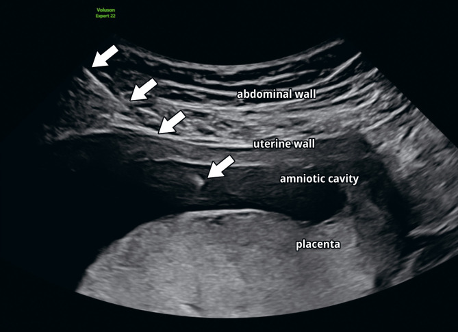
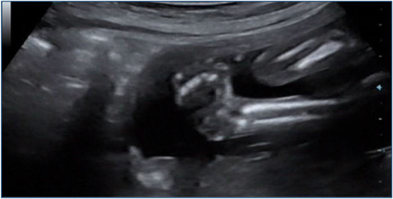
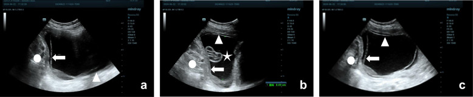

3136 — Chọc ối sớm trước 15 tuần (early amniocentesis): vì sao bàn chân khoèo tăng từ 0,1% lên 1,3% và khi nào vẫn phải chọn
Tags: pattern:bien-chung-thu-thuat pattern:ro-oi pattern:di-tat-chi pattern:manh-oi vung:thai vung:buong-oi vung:manh-oi vung:banh-nhau protocol:choc-oi protocol:CVS
Mức chắc chắn (certainty): tổng hợp y văn (literature synthesis) — số liệu lấy từ thử nghiệm ngẫu nhiên CEMAT 4.374 thai (Lancet 1998, PMID 9457093), tổng quan hệ thống Cochrane 2017 — 16 thử nghiệm, 33.555 thai (PMID 28869276), tổng quan Cochrane 2000 so sánh chọc ối sớm với CVS (PMID 10796116), khuyến cáo tổng quan Tabor & Alfirevic 2010 (PMID 20051662), đoàn hệ tiến cứu 15 năm — 3.238 thai, một phẫu thuật viên (Genes 2026, PMCID PMC13704424, CC BY) và đoàn hệ 331 thai về dính màng muộn (PMC12858216). Ba ảnh minh hoạ là ảnh CC của bài gốc; không có ca do nhóm tự chụp, không có ca nguyên văn nào của người viết.
Kịch bản thực hành (ghép từ các nguồn trên, không phải ca nguyên văn): thai phụ 38 tuổi, thai 12 tuần 4 ngày, siêu âm đo CRL tương ứng, bánh nhau mặt sau, màng ối và màng đệm còn tách rời; NIPT không thực hiện được, cần kết quả di truyền trước 15 tuần vì lý do cá nhân. Câu hỏi: CVS hay chọc ối sớm, và phải tư vấn con số nào? Bài chốt ba quyết định: (1) mốc 15+0 tuần không phải hình thức — chọc ối sớm 11–12 tuần làm bàn chân khoèo tăng từ 0,1% lên 1,3% (p = 0,0001) và mất thai tăng 1,7 điểm % so với chọc ối giữa tam cá nguyệt; (2) khi buộc phải có kết quả trước 15 tuần, CVS là lựa chọn trước, chọc ối sớm chỉ là phương án hai với kỹ thuật khắt khe (kim 22 G, 3–5 mL, một lần chọc); (3) ở tay nghề cao, chọc ối sớm 11–14 tuần có thể an toàn (sảy thai 0,25%), nhưng con số đó không dùng để tư vấn đại trà. Nối 1954 – Chọc ối & sinh thiết gai nhau: biến chứng, 1988 – Chọc ối & CVS ở song thai, 1989 – Chọc dò cuống rốn, 1725 – Vỡ ối non trước 24 tuần, 1936 – Tụ máu bao cơ thẳng.
1. Tổng quan bệnh học – cơ chế hình ảnh
1.1 Chọc ối sớm là gì và vì sao tồn tại
- Định nghĩa: chọc ối sớm (early amniocentesis — EA) là hút dịch ối trong khoảng 11+0 đến 14+6 tuần, tức trước mốc 15+0 tuần mà các hướng dẫn dùng cho chọc ối tiêu chuẩn. Trong thử nghiệm CEMAT, EA được làm 11+0–12+6 tuần và lấy 11 mL dịch; chọc ối giữa tam cá nguyệt làm 15+0–16+6 tuần, lấy 20 mL (PMID 9457093). Trong đoàn hệ Croatia 2010–2024, EA làm 11+0–13+6 tuần (trung vị 12+6), kim 22 G, hút 3–5 mL bằng kỹ thuật "amniovacucentesis" (PMC13704424).
- Lý do tồn tại: chọc ối giữa tam cá nguyệt trả kết quả sau 16–18 tuần, làm mất cửa sổ can thiệp sớm; CVS cho kết quả sớm hơn nhưng lấy nhung mao bánh nhau nên có nguy cơ khảm giới hạn bánh nhau (confined placental mosaicism, CPM) và cần chọc ối xác nhận. EA lấy tế bào thai bong vào dịch ối nên tránh được CPM — đây là lợi thế sinh học thật của EA, không phải lợi thế thời gian.
- Vì sao 11 tuần là mốc dưới: trước 10–11 tuần, màng ối chưa phủ toàn bộ khoang đệm và buồng ối còn nhỏ; CVS trước 10 tuần gắn với dị tật giảm chi (limb reduction defects) (PMID 20051662). Vì vậy cửa sổ 11–14 tuần là "cửa sổ duy nhất" cho lấy mẫu sớm.
1.2 TẠI SAO chọc ối sớm nguy hiểm hơn — ba khác biệt giải phẫu, không phải "tay nghề kém"
- Màng ối và màng đệm CHƯA DÍNH. Ở 11–14 tuần, hai lá màng còn tách rời và thường dính dần trong khoảng 14–16 tuần; trong một đoàn hệ 325 thai, 28,0% (91/325) vẫn còn tách màng ở 16 tuần (PMC12858216). Hệ quả: kim luôn xuyên hai lá, và dịch ối có thể rò vào khoang màng đệm — tạo tách màng ối–đệm (chorioamniotic separation), dải màng trôi nổi và cuối cùng là dải màng ối (amniotic band) gây thắt chi. Đây là cơ chế biến dạng (deformation) do rò dịch, khác hẳn "tai nạn kim" đơn thuần.
- Buồng ối nhỏ, khoảng an toàn hẹp. Cùng một kim, cùng một góc vào, thể tích hút ở EA chỉ 3–5 mL so với 20 mL ở chọc ối chuẩn (PMC13704424; PMID 9457093). Thai 11–13 tuần lại nằm sát thành bụng trước, chi dưới thường gấp vào thân, nên khoảng cách từ thành bụng đến bàn chân rất ngắn — trên siêu âm, kim và bàn chân có thể chồng hình ở lát cắt dọc, và đó là lý do phải xem hai bình diện trực giao.
- Nguy cơ "chạm chi" cao hơn tính theo thời gian phơi nhiễm. CEMAT ghi nhận bàn chân khoèo (talipes equinovarus) tăng 13 lần (1,3% so với 0,1%), trong khi tổng mất thai chỉ tăng 1,7 điểm % (7,6% so với 5,9%). Mô hình này — một dị tật chi định vị cụ thể tăng mạnh hơn tử vong chung — phù hợp với tổn thương trực tiếp/thiểu ối cục bộ tại bàn chân hơn là một biến cố toàn thân. Bài của nhóm CEMAT đặt đúng câu hỏi: "disruption hay deformation?" — và đến nay chưa phân định (PMID 10544229).
1.3 Con số phải thuộc (ngưỡng định lượng)
- CEMAT (RCT, 4.374 thai): mất thai toàn bộ 7,6% vs 5,9% (chênh 1,7%, p = 0,012); talipes 1,3% vs 0,1% (p = 0,0001); rò ối sau thủ thuật 3,5% vs 1,7% (p = 0,0007) (PMID 9457093).
- Cochrane 2017 (chọc ối sớm vs chọc ối giữa tam cá nguyệt, 1 thử nghiệm, 4.334 thai): mất thai RR 1,29 (1,03–1,61); sảy thai tự nhiên 3,6% vs 2,5%, RR 1,41 (1,00–1,98); dị tật (gồm talipes) 4,7% vs 2,7%, RR 1,73 (1,26–2,38) (PMID 28869276).
- Cochrane 2017 (chọc ối sớm vs CVS transabdominal): sảy thai 2,3% vs 1,3%, RR 1,73 (1,15–2,60) (PMID 28869276).
- Cochrane 2000 (3 thử nghiệm, 915 vs 917 thai): thất bại lấy mẫu 0,4% vs 2,0%, RR 0,23 (0,08–0,65) — nghĩa là EA lấy mẫu thành công hơn CVS, nhưng sảy thai tự nhiên 4,4% vs 2,3%, RR 1,92 (1,14–3,23) (PMID 10796116).
- Ngưỡng hướng dẫn: mất thai liên quan thủ thuật của chọc ối và CVS là 0,5–1,0%; không chọc ối trước 15+0 tuần, không CVS trước 10 tuần (PMID 20051662).
- Đoàn hệ tay nghề cao (3.238 thai, một phẫu thuật viên): kết quả di truyền đạt 99,9% (EA) và 99,8% (CVS); sảy thai tự nhiên 0,25% vs 0,18% (chênh 0,06%, KTC 95% −0,32 đến 0,47; p = 0,73); talipes 2 ca EA, 0 ca CVS; một lần chọc đủ mẫu 96,6%; khảm 0,25% ở CVS, 0 ca ở EA; không có nhiễm trùng (PMC13704424).
1.4 TẠI SAO hai bộ số "mâu thuẫn" — và cách đọc
- Khác biệt kỹ thuật: CEMAT hút 11 mL bằng kim thời 1990 và làm ở 11–12 tuần; đoàn hệ 2026 hút 3–5 mL bằng kim 22 G và làm muộn hơn (trung vị 12+6). Thể tích hút nhỏ hơn làm giảm rò ối, và tuổi thai muộn hơn làm giảm nguy cơ talipes.
- Khác biệt thiết kế: RCT đa trung tâm có nhiều tay nghề, còn đoàn hệ 2026 là một phẫu thuật viên duy nhất, hơn 3.000 ca — tác giả tự viết rằng kết quả không dùng được để tư vấn chung.
- Cách dùng trong tư vấn: số của RCT và Cochrane là số để tư vấn; số của trung tâm mình là số để đánh giá chất lượng nội bộ. Không được lấy 0,25% của một phẫu thuật viên để nói "chọc ối sớm an toàn".
2. Mẫu hình + chẩn đoán phân biệt theo vị trí (gamut)
- Mẫu hình chính (pattern): kim đi qua thành bụng → cơ tử cung → hai lá màng → buồng ối, trong khi màng ối và màng đệm còn tách rời, và đầu kim nằm trong khoang ối không có thai/bánh nhau. Hệ quả hình ảnh chia đúng theo lớp giải phẫu mà kim đi qua.
- Gamut theo lớp (location):
- Thành bụng trước: tụ máu bao cơ thẳng (rectus sheath hematoma) — khối không đập, hình thoi trong bao cơ, tăng âm → hỗn hợp âm theo thời gian; đau khu trú, có thể thiếu máu. Bài 1936.
- Màng ối – màng đệm: rò ối (amniotic fluid leak) 3,5% (CEMAT), PPROM, tách màng ối–đệm, dải màng ối thắt chi; trên siêu âm: dải màng mảnh trôi trong khoang ối, bờ tự do, có thể quấn quanh chi; thiểu ối (MVP < 1 cm) là dấu hiệu nặng.
- Bánh nhau: chảy máu/hematoma tại chỗ chọc — đoàn hệ 2026 ghi 8 ca (0,49%) hematoma 0,5–1 mL; xuất huyết thai–mẹ (FMH) → nguy cơ tạo kháng thể anti-D nếu mẹ Rh âm.
- Thai nhi: talipes equinovarus (1,3% trong CEMAT), tổn thương chi trực tiếp, thiểu ngón/đứt chi khi có dải màng; nhịp tim thai chậm thoáng qua sau chọc.
- Khoang ối: khô kim (dry tap)/thất bại lấy mẫu — 0,4% ở EA so với 2,0% ở CVS (Cochrane 2000); thất bại nuôi cấy do máu/mẫu ít.
- Mẹ: nhiễm trùng (0% trong đoàn hệ 2026), tan máu do anti-D, đau/lo âu; chạm ruột/bàng quang nếu bàng quang không rỗng hoặc có dính vùng chậu.
- Gamut của "bàn chân khoèo trên siêu âm thai" (vì đây là dấu hiệu hay gặp sau EA):
- Talipes do biến dạng sau chọc ối sớm — tiền sử chọc ối 11–14 tuần, bàn chân khoèo hai bên hoặc một bên, không kèm bất thường cấu trúc khác, xuất hiện ở lần siêu âm 18–22 tuần.
- Talipes đơn độc (isolated) — 1–2/1.000 trẻ sinh; đa số lành tính, cần đánh giá cột sống và khám sau sinh.
- Bất thường NST — trisomy 18/13, thể ba nhiễm khác; kèm dị tật tim, bàn tay nắm, chậm tăng trưởng.
- Dải màng ối — bàn chân khoèo không đối xứng, kèm thiểu ngón/đứt chi, dải màng thấy được.
- Chuỗi thiểu ối (oligohydramnios sequence) — thiểu ối nặng nhiều tuần → biến dạng chi + phổi giảm sản.
- Bệnh thần kinh–cơ thai nhi — arthrogryposis, loạn dưỡng cơ, tổn thương tủy; nhiều khớp co rút, không chỉ bàn chân.
3. Bảng so sánh phân biệt (ma trận đối chiếu)
| Thực thể (entity) | Thời điểm – kỹ thuật | Siêu âm/hình ảnh then chốt | Chốt vào (rule-in) | Chốt loại (rule-out) | Gợi ý xác nhận |
|---|---|---|---|---|---|
| Chọc ối sớm (EA) | 11+0–14+6 tuần; kim 22 G, hút 3–5 mL (CEMAT: 11 mL) | Kim vào khi hai lá màng còn tách; đầu kim trong khoang ối, tránh bánh nhau và chi | Tiền sử chọc ối 11–14 tuần + bàn chân khoèo/dải màng mới xuất hiện sau đó | Không loại trừ bằng "không thấy bất thường ngay sau chọc" — talipes chỉ rõ ở 18–22 tuần | Siêu âm hình thái 18–22 tuần; hỏi lại ngày và số lần chọc |
| Chọc ối tiêu chuẩn ≥ 15+0 tuần | ≥ 15+0; kim 20–22 G, hút 20 mL | Hai lá màng đã dính; khoang ối rộng hơn, thai xa thành bụng | Talipes 1,3% vs 0,1% nghiêng hẳn về EA khi có tiền sử chọc sớm | Không loại trừ được talipes do nguyên nhân khác nếu không có tiền sử | Đối chiếu ngày chọc; nếu ≥ 15 tuần thì nguy cơ do thủ thuật thấp hơn hẳn |
| CVS transabdominal (TA-CVS) | 11+0–13+6; kim 20 G, lấy nhung mao | Đầu kim trong bánh nhau, đường vào dưới siêu âm liên tục; có thể hematoma tại chỗ | Cần kết quả sớm + bánh nhau tiếp cận được | Không dùng khi bánh nhau mặt sau – khó tiếp cận, hoặc cần tránh CPM | Karyotype/CMA nhung mao; khảm 0,25% trong đoàn hệ 2026 |
| CVS transcervical (TC-CVS) | 11–13+6, qua cổ tử cung | Ống thông/forceps trong khoang đệm; khó hơn, thất bại 2,0% vs 1,1% (TA-CVS) | Khi không thể đường bụng (béo phì, bánh nhau cao) | Thất bại lấy mẫu cao hơn | Cochrane 2017: thất bại lấy mẫu TC 2,0% vs TA 1,1%, RR 1,79 (1,13–2,82) |
| Celocentesis (lấy tế bào ối cực sớm) | 7–9 tuần, kim mảnh vào khoang đồng tử (coelom) | Đầu kim trong khoang đồng tử, ngoài túi ối | Nghiên cứu, khi cần chẩn đoán rất sớm ở gia đình có bệnh đơn gene | Chưa dùng thường quy; dữ liệu an toàn còn mỏng | Chỉ trong nghiên cứu có đạo đức phê duyệt |

Siêu âm dọc tại 16+4 tuần (kỹ thuật của chọc ối tiêu chuẩn): mũi tên trắng lần lượt chỉ thành bụng, thành tử cung, rồi đầu kim trong khoang ối; phía dưới là bánh nhau mặt sau. Khi làm ở 11–14 tuần, hai lá màng chưa dính nên kim phải xuyên thêm lớp màng đệm — chính là nơi dịch ối rò qua và tạo dải màng. Nguồn: Med Genet 2026 (PMCID PMC13099245), Fig. 1 — CC BY 4.0.4. Protocol chụp/thủ thuật + ngưỡng xử trí
4.1 Trước thủ thuật (quyết định cửa sổ tuổi thai)
- Xác định tuổi thai bằng CRL, không dựa kinh cuối; ghi rõ 11+0–13+6 hay ≥ 15+0. Đây là biến số quyết định nguy cơ, không phải thông tin hành chính.
- Đánh giá màng: mô tả màng ối–đệm đã dính hay còn tách; nếu còn tách, ghi nhận vì đây là điều kiện của EA và là cơ sở của tư vấn rò ối/dải màng.
- Bánh nhau, chi thai, khoang ối: chọn đường vào tránh bánh nhau và tránh chi dưới; đo MVP (thể tích ối ít → nguy cơ dry tap).
- Bàng quang mẹ rỗng, da sát trùng, không nhiễm trùng âm đạo–cổ tử cung; kiểm tra nhóm máu Rh trước thủ thuật.
- Tư vấn bằng số của RCT/Cochrane, không bằng số của trung tâm: mất thai 7,6% vs 5,9%, talipes 1,3% vs 0,1%, rò ối 3,5% vs 1,7% so với chọc ối ≥ 15 tuần; nếu chọn CVS, nêu sảy thai 2,3% vs 1,3% và khảm bánh nhau 0,25%.
4.2 Kỹ thuật (nếu chọn EA)
- Kim 22 G, đường xuyên thành bụng, siêu âm liên tục, luôn thấy đầu kim (in-plane) — không đâm "mù" theo hướng ước lượng.
- Một lần chọc là mục tiêu (đoàn hệ 2026: 96,6% đủ mẫu lần đầu); tối đa 2 lần trong cùng ngày (CEMAT).
- Hút 3–5 mL ở EA (CEMAT dùng 11 mL); bỏ 1–2 mL đầu để giảm nhiễm bẩn tế bào mẹ, rồi lấy mẫu cho QF-PCR (24–48 giờ) và nuôi cấy (~7 ngày).
- Nếu có bất thường cấu trúc trên siêu âm: thêm CMA/CNV — trong đoàn hệ 2026, 5/35 (14,3%) thai có bất thường cấu trúc mang CNV gây bệnh (PMC13704424).
- Anti-D 300 µg trong 72 giờ nếu mẹ Rh âm (liều và thời điểm theo bài 1954); CVS trước 13 tuần dùng liều thấp hơn (50 µg).
4.3 Sau thủ thuật — theo dõi và ngưỡng can thiệp
- Dấu hiệu đỏ phải tái khám ngay: rò dịch âm đạo, sốt ≥ 38 °C, chảy máu nhiều, cơn co tử cung, đau bụng tăng.
- Rò ối: siêu âm lại 1–2 tuần, đo MVP/AFI; nếu MVP < 1 cm → nguy cơ chuỗi thiểu ối, hội chẩn sản–sơ sinh; không kết luận "phải bỏ thai" ngay vì một phần lỗ kim tự bít.
- Nhiễm trùng: không có ca nhiễm trong đoàn hệ 2026, nhưng sốt + dịch hôi sau chọc = viêm màng ối cho đến khi loại trừ; cấy máu, kháng sinh, cân nhắc kết thúc thai theo tuổi thai.
- Talipes/dải màng: siêu âm hình thái 18–22 tuần là mốc đọc bàn chân; nếu thấy bất thường, không quy ngay cho thủ thuật — đối chiếu ngày chọc, tuổi thai lúc chọc, số lần chọc và các bất thường phối hợp.
flowchart TD
A[Thai 11+0 den 13+6 tuan can ket qua di truyen] --> B{Co the lam CVS khong}
B -->|Co| C[TA-CVS 20G trong cua so 11-13+6 tuan]
B -->|Khong| D{Da du 15+0 tuan chua}
D -->|Chua va buoc phai co ket qua som| E[Can nhac choc oi som sau tu van: kim 22G, 3-5 mL, mot lan choc]
D -->|Chua nhung co the cho| F[Cho choc oi chuan tu 15+0 tuan: 20 mL]
D -->|Da du| F
C --> G[QF-PCR 24-48 gio + nuoi cay]
E --> G
F --> G
G --> H{Co bat thuong cau truc tren sieu am khong}
H -->|Co| I[Them CMA/CNV]
H -->|Khong| J[Tu van ket qua va theo doi thai]
I --> J
4.4 Bảng ngưỡng cần nhớ
| Ngưỡng | Con số | Ý nghĩa thực hành |
|---|---|---|
| Tuổi thai chọc ối tối thiểu | 15+0 tuần | Dưới mốc này: nguy cơ talipes và rò ối tăng rõ (CEMAT, Cochrane) |
| Tuổi thai CVS tối thiểu | 10–11 tuần | Trước 10 tuần: dị tật giảm chi |
| Thể tích hút EA | 3–5 mL (CEMAT 11 mL) | Hút ít → giảm rò ối; đủ cho QF-PCR + nuôi cấy |
| Talipes sau EA vs chọc ối muộn | 1,3% vs 0,1% | Con số tư vấn chính; RR 1,73 cho nhóm dị tật |
| Rò ối sau EA vs muộn | 3,5% vs 1,7% | Dấu hiệu đỏ: dịch âm đạo, MVP < 1 cm |
| Thất bại lấy mẫu EA vs CVS | 0,4% vs 2,0% | EA "dễ lấy mẫu" hơn — đây là lợi thế kỹ thuật, không phải lợi thế an toàn |
5. Biến thể bình thường và cạm bẫy
- Biến thể bình thường 1 — hai lá màng chưa dính ở 11–14 tuần. Đây là giải phẫu bình thường, không phải "bất thường màng ối"; ở 16 tuần vẫn còn 28,0% thai chưa dính hoàn toàn (PMC12858216). Đừng gọi là bệnh, nhưng phải ghi nhận vì nó là nền của rò ối và dải màng.
- Biến thể bình thường 2 — "bàn chân gập" ở 11–12 tuần. Bàn chân thai nhi ở tuổi này thường xoay vào trong và có thể giả bàn chân khoèo; chẩn đoán talipes đáng tin hơn từ 13 tuần và đặc biệt ở 18–22 tuần. Vì vậy, một siêu âm 12 tuần "bàn chân bất thường" không đủ để kết luận.
- Cạm bẫy 1 — quy talipes cho thủ thuật mà bỏ qua nguyên nhân khác. Chỉ quy kết khi: tiền sử chọc ối 11–14 tuần, bàn chân bất thường mới xuất hiện, không có bất thường NST/dải màng/thiểu ối và không có bệnh thần kinh–cơ. Nếu có thiểu ngón/đứt chi, nghĩ dải màng trước.
- Cạm bẫy 2 — đọc "máu trong dịch ối" là thất bại. Chảy máu nhẹ sau chọc gặp ở 1,97% (EA 1,0% vs CVS 2,0%), hematoma bánh nhau 0,49%, và đa số không ảnh hưởng kết quả; nhưng máu nhiều làm nuôi cấy thất bại và có thể che lấp chi tiết trên siêu âm.
- Cạm bẫy 3 — lấy số của một trung tâm để tư vấn. "Chọc ối sớm chỉ sảy thai 0,25%" là số của một phẫu thuật viên với > 3.000 ca; dùng số đó cho mọi trung tâm là tư vấn sai. Ngược lại, dùng số 7,6% của CEMAT để dọa bệnh nhân ở một trung tâm làm 100 ca/năm cũng sai — phải nói khoảng và điều kiện kỹ thuật.
- Cạm bẫy 4 — coi CVS là "không có khảm". Khảm bánh nhau 0,25% trong đoàn hệ 2026 và có thể cao hơn ở trung tâm khác; khảm trên CVS phải xác nhận bằng chọc ối, không kết luận thai bất thường ngay.
- Cạm bẫy mặt cắt: trên lát dọc, kim và bàn chân thai có thể chồng hình; cần hai bình diện trực giao và màu Doppler để phân biệt đầu kim với xương thai. Tương tự, dải màng ối trên lát ngang có thể giả vách ngăn (trong song thai) — luôn xoay đầu dò và đối chiếu 3D.
6. Tự lượng giá — Blind Quiz
Ca 1 — thai 16+4 tuần, chọc ối vì nguy cơ trisomy 21 cao
- Gợi ý lâm sàng: thai phụ nguy cơ cao, xét nghiệm sàng lọc ba tháng đầu bất thường, được chọc ối lấy dịch.
- Câu hỏi: Kể tên các lớp mũi tên đi qua? Vì sao ở tuổi thai này kim chỉ xuyên một lớp màng, còn ở 12 tuần thì khác? Đầu kim nằm ở đâu so với bánh nhau?
Bấm để hiện đáp án (findings + chẩn đoán)
- Dấu hiệu (findings): mũi tên trắng lần lượt chỉ thành bụng, thành tử cung, khoang ối, và đầu kim nằm trong khoang ối; bánh nhau mặt sau ở dưới, không bị kim xuyên.
- Chẩn đoán (diagnosis): chọc ối dưới hướng dẫn siêu âm ở 16+4 tuần — ở tuổi này màng ối và màng đệm đã dính, nên kim chỉ qua một "vách" màng; ở 11–14 tuần hai lá còn tách, đầu kim đi qua hai lớp và dịch có thể rò vào khoảng giữa.
- Ý nghĩa: đúng vị trí đầu kim + tránh bánh nhau là điều kiện để không có FMH và không có dry tap.
- Nguồn ảnh: Med Genet 2026 (PMCID PMC13099245), Fig. 1 — CC BY 4.0.
Ca 2 — thai 22 tuần, siêu âm hình thái thấy bàn chân bất thường, tiền sử chọc ối lúc 12 tuần

- Gợi ý lâm sàng: thai phụ 38 tuổi, chọc ối lúc 12 tuần 2 ngày vì lo lắng tuổi mẹ; karyotype bình thường; siêu âm 22 tuần thấy bàn chân gập vào trong, không thấy bất thường tim/thận.
- Câu hỏi: Mô tả dấu hiệu chính? Ba chẩn đoán phân biệt? Dấu hiệu nào giúp quy kết cho thủ thuật và dấu hiệu nào chống lại quy kết đó?
Bấm để hiện đáp án (findings + chẩn đoán)
- Dấu hiệu (findings): mặt lòng bàn chân nằm cùng mặt phẳng dọc với xương chày và xương mác, bàn chân gập vào trong — hình ảnh talipes equinovarus.
- Chẩn đoán (diagnosis): bàn chân khoèo, có thể do biến dạng sau chọc ối sớm (tiền sử 12 tuần, không có bất thường khác) hoặc talipes đơn độc; cần loại trừ bất thường NST, dải màng ối và bệnh thần kinh–cơ.
- Dấu hiệu quy kết: chọc ối 11–14 tuần, bàn chân bất thường mới xuất hiện, không kèm dị tật khác — phù hợp mô hình CEMAT (1,3% vs 0,1%). Dấu hiệu chống lại: thiểu ngón/đứt chi (dải màng), bất thường tim/tay nắm (NST), nhiều khớp co (arthrogryposis).
- Nguồn ảnh: Rev Assoc Med Bras 2026 (PMCID PMC13318272), Fig. 1 — CC BY 4.0.
Ca 3 — thai 13 tuần, sau chọc ối sớm 5 ngày, siêu âm thấy dải màng mảnh trong khoang ối

- Gợi ý lâm sàng: chọc ối sớm lúc 13 tuần vì cần kết quả trước 15 tuần; 5 ngày sau siêu âm kiểm tra thấy dải màng mảnh trôi trong khoang ối, lượng ối còn bình thường; thai phụ không sốt, không ra dịch.
- Câu hỏi: Dải màng này được tạo ra thế nào? Nó nguy hiểm khi nào? Theo dõi ra sao và khi nào can thiệp?
Bấm để hiện đáp án (findings + chẩn đoán)
- Dấu hiệu (findings): màng mảnh, bờ tự do, trôi trong khoang ối (đầu mũi tên), tách khỏi màng đệm; đây là dạng tách màng ối–đệm/dải màng ối.
- Chẩn đoán (diagnosis): dải màng ối (amniotic band) sau chọc ối sớm — cơ chế: kim xuyên hai lá màng chưa dính → dịch ối rò vào khoang đệm → màng ối bong, cuộn thành dải. Nguy hiểm khi dải quấn quanh chi (thắt, thiểu ngón, đứt chi) hoặc gây thiểu ối.
- Theo dõi: siêu âm mỗi 2–4 tuần đánh giá chi, dây rốn, MVP; can thiệp (fetoscopic release) chỉ khi có thắt chi tiến triển/thai đe dọa, không can thiệp dải màng "trôi tự do" không chạm thai.
- Phản biện (critique): hình minh hoạ lấy từ ca tách màng tự phát (không do chọc ối), nên chỉ dùng để mô tả hình thái; không suy ra tần suất biến chứng sau EA.
- Nguồn ảnh: BMC Pregnancy Childbirth 2025 (PMCID PMC12522545), Fig. 1 — CC BY-NC-ND 4.0 (nguyên bản, không cắt/ghép).
Bài liên quan chéo
- 1954 – Chọc ối & sinh thiết gai nhau: biến chứng và dự phòng anti-D
- 1988 – Chọc ối & CVS ở song thai
- 1989 – Chọc dò cuống rốn
- 1725 – Vỡ ối non tháng trước 24 tuần
- 1936 – Tụ máu bao cơ thẳng bụng
- 500 – Tổng quan Vú & Sản phụ khoa
Ảnh
3136_choc-oi-som_US_PMC13099245-F1.jpg— chọc ối 16+4 tuần, các lớp kim đi qua (Med Genet 2026, PMC13099245, CC BY 4.0).3136_choc-oi-som_US_PMC13318272-F1.jpg— siêu âm bàn chân khoèo bẩm sinh (Rev Assoc Med Bras 2026, PMC13318272, CC BY 4.0).3136_choc-oi-som_US_PMC12522545-F1.jpg— dải màng ối do màng ối bong khỏi màng đệm (BMC Pregnancy Childbirth 2025, PMC12522545, CC BY-NC-ND 4.0).- Nguồn + giấy phép từng ảnh:
images/CREDITS.md; link gốc:sources.md.
Không dùng để chẩn đoán độc lập khi chưa có người hướng dẫn.